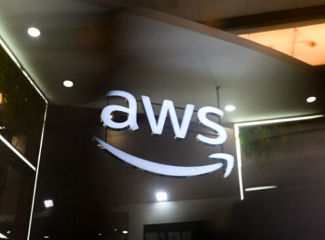

OVHCloud et Lois Extraterritoriales
-Sujet : Conflit juridique sur la souveraineté des données Cloud face aux lois extraterritoriales.
-Contexte : La justice canadienne a exigé des adresses IP hébergées sur les serveurs français d'OVHCloud.
-Problématique : OVHCloud refuse, car la loi française exige un passage par les traités de coopération judiciaire internationale.
-Enjeu : L'affaire teste la stratégie de protection des données d'OVHCloud face au risque de sanctions croisées.

Panne Mondiale AWS : Dépendance au Cloud
-Sujet : Conséquences d'une panne majeure chez AWS (Amazon Web Services), le premier fournisseur mondial de Cloud.
-Contexte : Une panne a perturbé des services essentiels, entraînant des ruptures chez des milliers d'entreprises mondiales dont: Disney, Netflix, Slack et bien d'autres.
-Problématique : L'incident révèle la dépendance critique du web moderne envers quelques fournisseurs et la vulnérabilité liée à l'hébergement Mono-Région.
-Enjeu : Cela force à concevoir des architectures plus résilientes, Multi-Régions ou Multi-Cloud, pour garantir une Haute Disponibilité et des Plans de Reprise d'Activité efficaces.